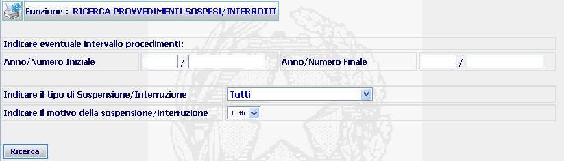
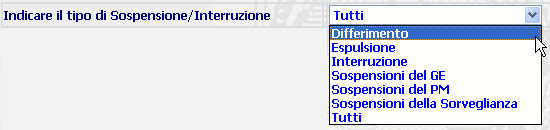
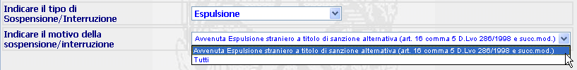

Per indicare l'intervallo dei procedimenti al quale limitare la ricerca occorre:
RICERCA PROVVEDIMENTI SOSPESI/INTERROTTI: La funzione consente di ricercare i provvedimenti sospesi/interrotti.
LA MASCHERA VIDEO
La funzione viene realizzata attraverso la maschera seguente in cui viene richiesto di compilare i campi presenti nella stessa:

COME FARE PER ...
|
Per indicare l'intervallo dei procedimenti al quale limitare la ricerca occorre: |
indicare l'anno ed il numero iniziale e finale dei periodo di riferimento
confermare i dati inseriti nella maschera agendo sul bottone
. Se esiste uno o più procedimenti rispondenti agli estremi atto indicati, allora viene visualizzata la maschera di elenco esiti ricerca fascicolo Siep altre bdi
|
Per effettuare una ricerca relativa a tutti i tipi di Sospensione e Interruzione, ovvero limitata solo a quelli indicati nella lista, occorre: |
selezionare una delle voci indicate

N.B. a fronte della selezione di un elemento della lista, la seguente lista relativa al motivo, si aggiornerà con i valori relativi e congruenti alla voce scelta nel tipo della Sospensione/Interruzione

confermare i dati inseriti nella maschera agendo sul bottone
CAMPI
I dati attraverso i quali è possibile effettuare la ricerca sono i seguenti:
| Anno Numero Iniziale - Anno Numero Finale | Campi (obbligatori) attraverso i quali va inserito l'intervallo numerico relativamente al quale si vuole effettuare la ricerca |
| Tipo Sospensione/Interruzione | Campo attraverso il quale è possibile inserire, tramite l'apposita tendina, il tipo di Sospensione/Interruzione |
| Motivo Sospensione/Interruzione | Campo attraverso il quale è possibile inserire, tramite l'apposita tendina, il Motivo di Sospensione/Interruzione |
PULSANTI
E' presente il pulsante
 di stampa del contesto (videata)
di stampa del contesto (videata)
BOTTONI
Oltre ai comandi funzionali relativi al menù verticale sono presenti i seguenti comandi:
|
COMANDI |
DESCRIZIONE |
|
|
A fronte di tale comando, il sistema dopo aver verificato la validità dei dati specificati, presenta la maschera contenente l'elenco esiti ricerca fascicolo Siep altre bdi |
CONTROLLI
A fronte della pressione
del bottone
 , il
sistema verifica che:
, il
sistema verifica che:
tutti i campi a testo libero e quelli selezionabili da una tendina siano stati compilati correttamente
Esista uno o più procedimenti rispondenti ai canali di ricerca selezionati.
|
Se il sistema non troverà alcun atto trasmesso da verificare verrà visualizzato il seguente messaggio |